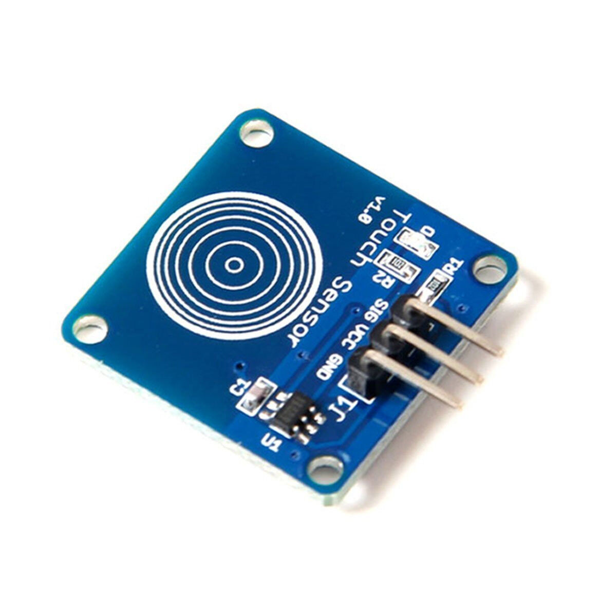
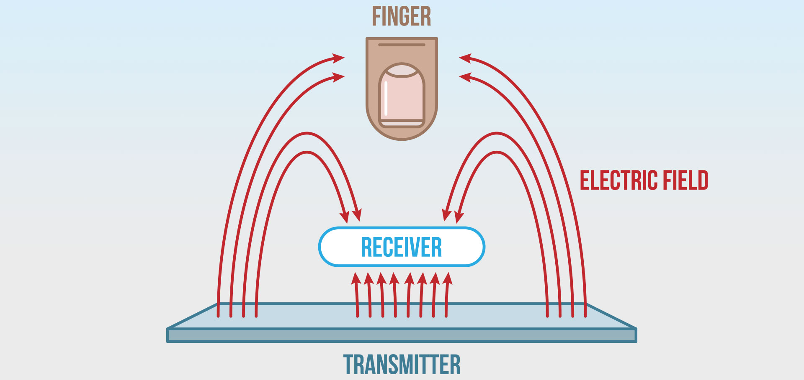
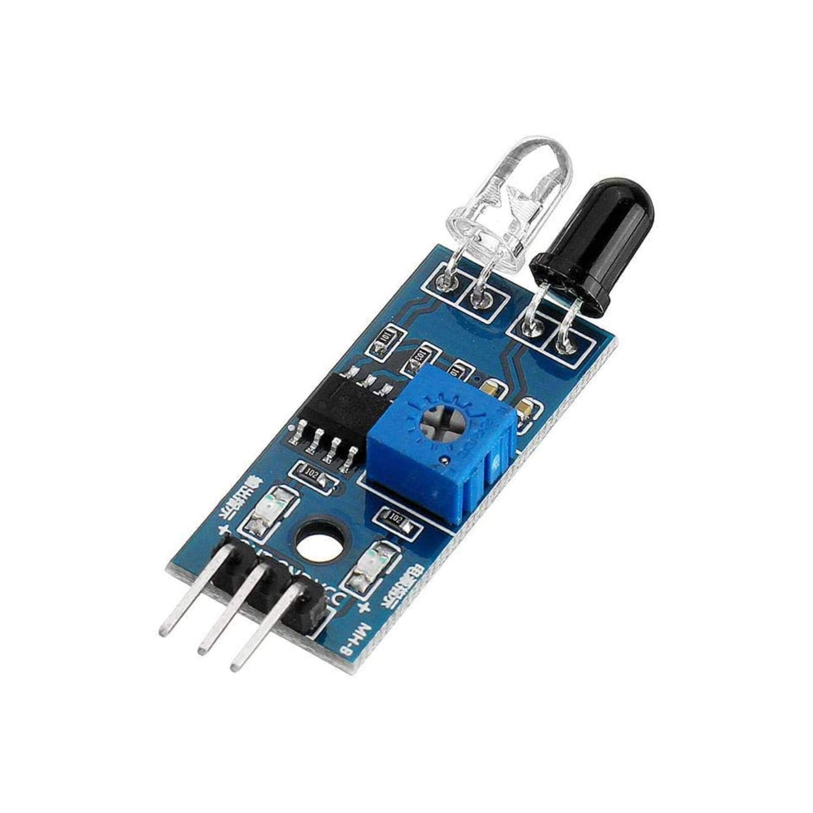
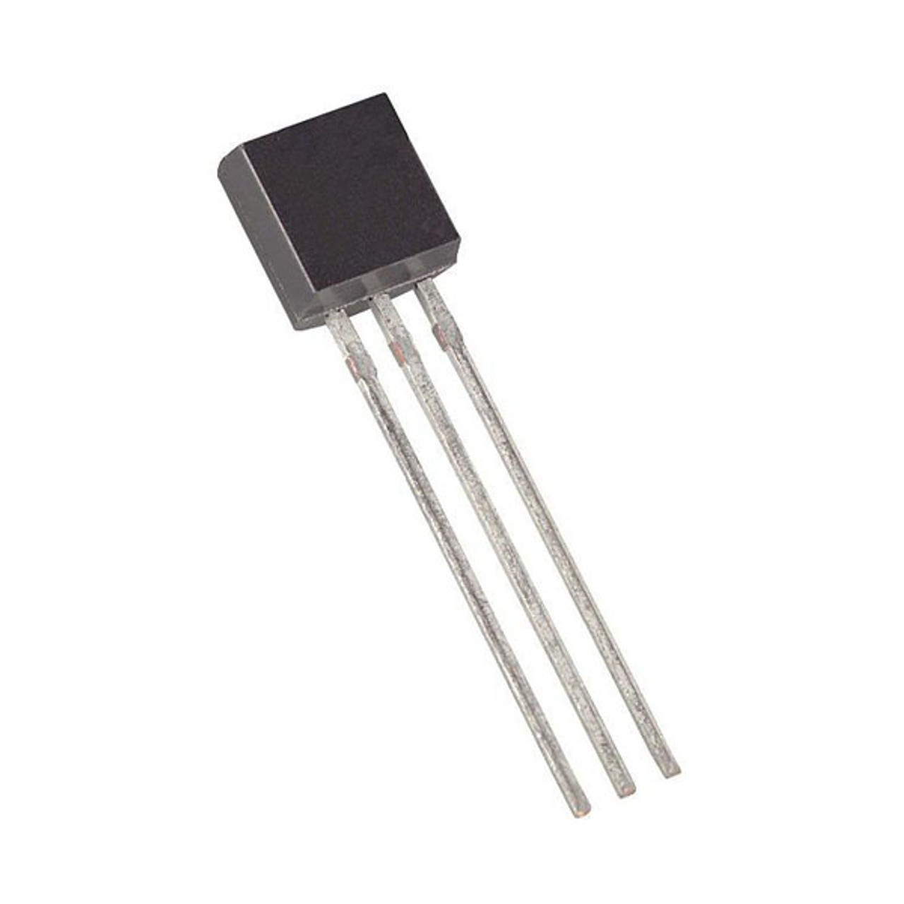
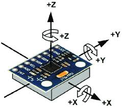

Sensors
Sensors allow robots to perceive their environment. They gather data and help in decision-making. Common sensors include:
- Ultrasonic Sensors
- Infrared Sensors
- Temperature Sensors
- Gyroscopic Sensor
- Touch Sensor
The touch sensor has a sensor plate component, which detects a finger or if the robot is physically touching another object. That is why the touch sensor is usually placed at the top or an edge of the robot.
 ________________________________________________________________________
The ultrasonic sensor is used to detect distance between the nearest object and the robot. It's functions are exactly like bats, it shoots out an ultrasonic sound wave and waits for it to bounce back. It then calculates the distance based on how long it took for the wave to come back. It also detects the pressence of an object in fronnt of it depending on whether the wave bounces back.

________________________________________________________________________
The infrared sensors function just like ultrasonic sensors, but instead of a sound wave, it lets out infrared light to detect whether an object is in front of the sensor.
________________________________________________________________________
Like the name, it is used to measure the temperature in front of the sensor and outputs it back into the computer, there really isn't much to it.
________________________________________________________________________
The "gyro" sensor measures and outputs the rotation of the robot. It goes 0 to 360 degrees clockwise and 0 to -360 when the robot rotates counter clockwise.
________________________________________________________________________